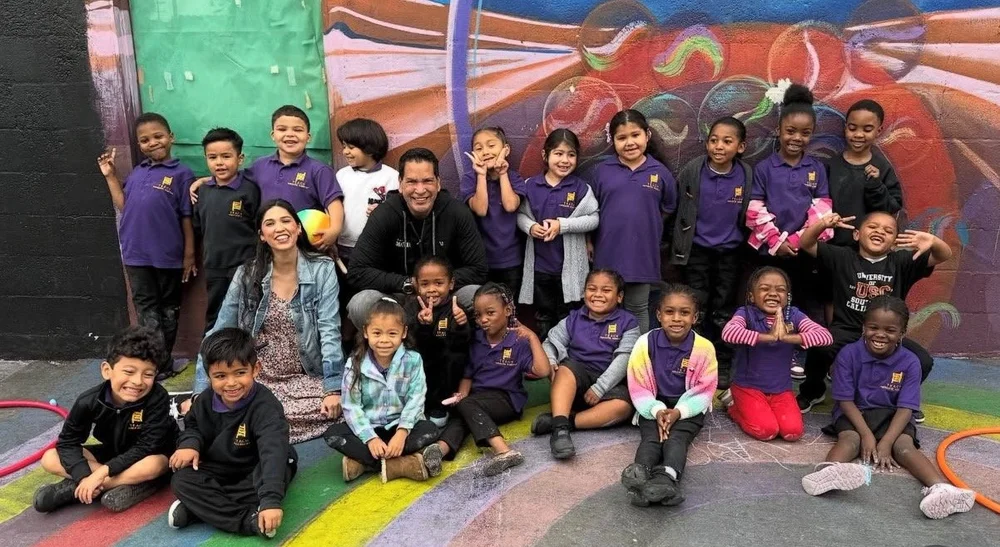
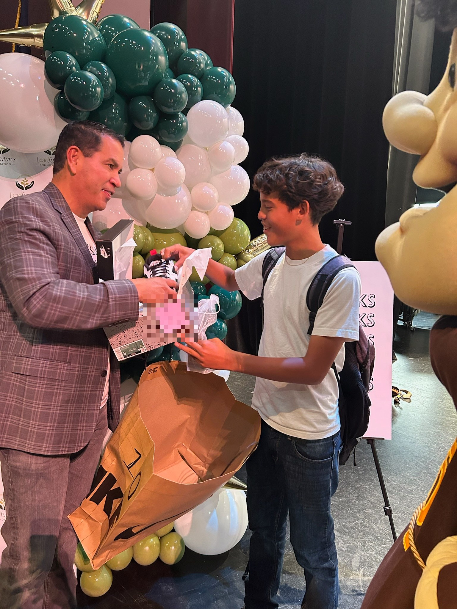
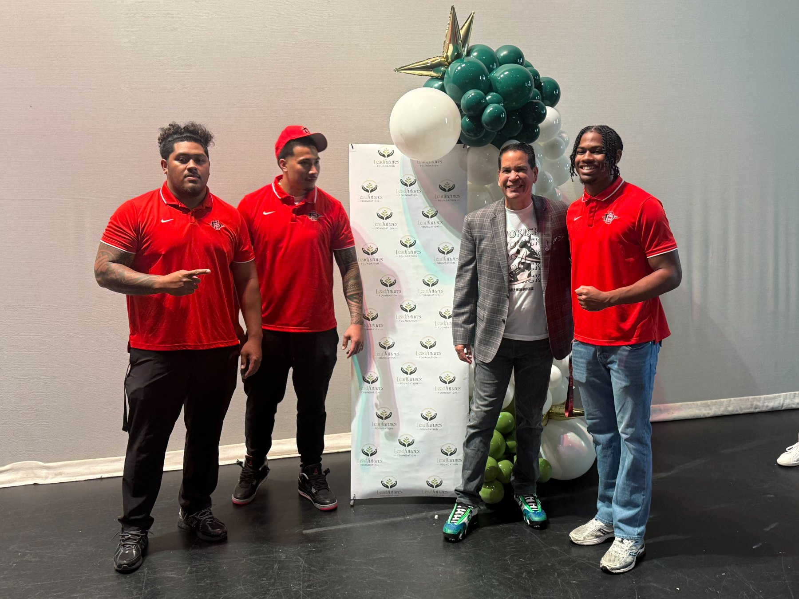

Where belonging becomes leadership.
From a first pair of new shoes to a first career in technology, our programs meet people where they are and walk alongside them as they grow. This is the work, up close.
Women in Tech Scholarship
Scholarships supporting women through four year college degrees on the way to technology careers. Thirteen awarded so far, with a goal of 150, and we stay with each scholar past graduation with career training, mentorship, and support as they step into the industry.
The program was born from three lives that opened doors for others: Kathleen Mito, Jonathan Oliver, and Kevin Buckley. Scholarships in their names carry their legacies forward and anchor a broader commitment to advancing women in technology.


EVOKicks: Step Into Success
Brand new shoes on students, paired with mentorship and a campus celebration. New shoes represent dignity, pride, and possibility, and the day is built around confidence and belonging.
Over 300 pairs have been given to date, and cofounder Cesar Enciso dreams of one million pairs in his lifetime.
LEAD Connect
Turning potential into momentum. Mentors and mentees are matched through education, athletics, career exploration, leadership experiences, and community involvement, with around 100 mentorship relationships built so far and a goal of 300.
Sports camps extend the same idea onto the field: break even tuition with sponsor funded scholarships, headlined by Starting Lineup athletes.

Life Skills
Growing skills that last a lifetime. Life skills and financial literacy that give people the tools to grow with confidence, independence, and long term success, with a goal of 250 participants.
Nervous System Leadership Initiative
The initiative extends life skills to the body itself: self regulation and somatic wellbeing for firefighters, police officers, teachers, students, social workers, and frontline staff. It is designed and led by Darlene Erich, a former Chief Nursing Officer and trauma informed somatic educator with more than twenty years leading critical care teams.
Helping teachers and school staff stay grounded through the school day, so they leave with energy left over and can pass those same skills to their students.
Teaching students to understand their own nervous system, a leadership skill for staying steady under pressure, in performance, and in conflict.
Supporting social workers and nonprofit staff who absorb other people's hardest days, with tools to recover, recharge, and keep helping for the long haul.
Giving firefighters, police officers, and first responders practical ways to stay calm in the moment, reset between calls, and lean on each other to make a hard job sustainable.
Hands that give back.
Turnkey volunteer activations where teams show up and the impact is countable.
Rise Against Hunger
High volume meal packing with a countable result: over one million meals packed and fed to date.
Homeless Backpack Build
Teams assemble backpacks of essentials for neighbors experiencing homelessness.
Every program needs people who believe.
Give, mentor, or bring your company alongside us.